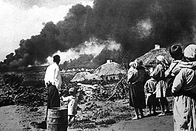
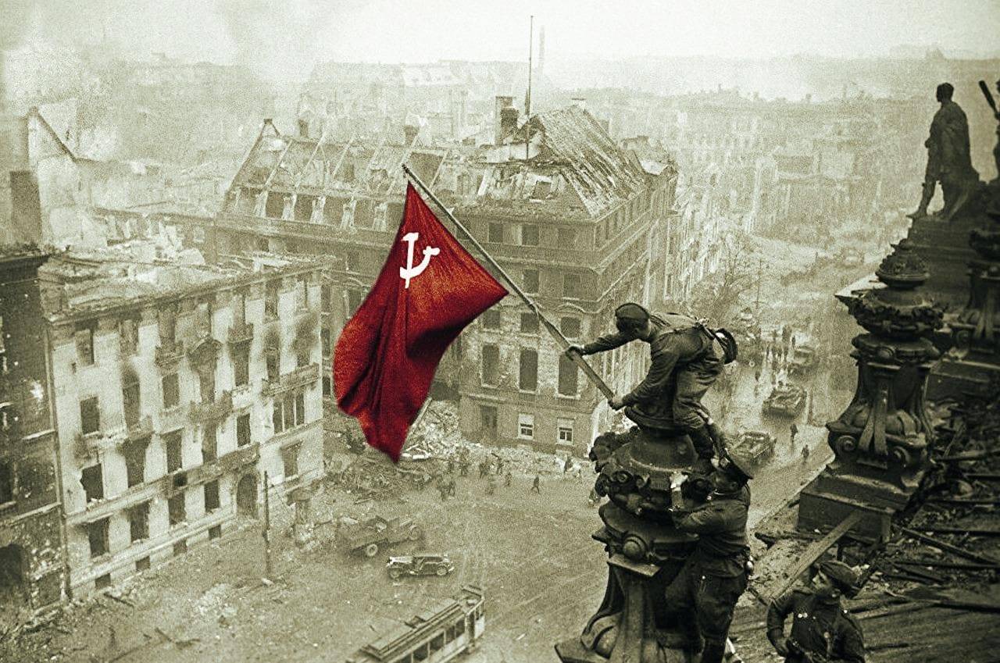

История Великой Отечественной войны
1941-1945 гг.
1941
Начало войны
22 июня 1941 года Германия напала на Советский Союз без объявления войны. Началась Великая Отечественная война.
1941-1942
Тяжелые оборонительные бои
Оборона Брестской крепости, Смоленское сражение, битва за Москву, оборона Ленинграда, Сталинградская битва.
1943
Коренной перелом
Победа в Сталинградской битве, Курская битва, освобождение большей части оккупированной территории.
1944
Освобождение территории СССР
Операция "Багратион", снятие блокады Ленинграда, освобождение Крыма, выход к границам СССР.
1945
Победа
Освобождение Европы, штурм Берлина, подписание акта о безоговорочной капитуляции Германии 8 мая 1945 года.
Ключевые факты
27
миллионов советских граждан погибло
1418
дней и ночей длилась война
34
тысячи Героев Советского Союза
9
мая - День Победы